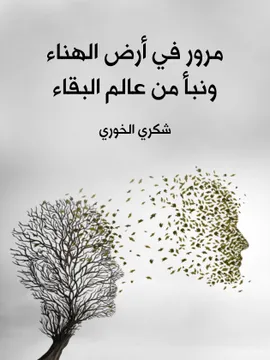

مرور في أرض الهناء ونبأ من عالم البقاء

قراءة عربية أصلية محددة النطاق في الصفحات 7، 8 من ملف PDF المرتبط، وليست تلخيصا كاملا للكتاب. نناقش ما تدعمه هذه المقاطع فقط.
اعترافات مشتري الكتب
تبدأ مقدمة الكتاب باعتراف طريف: في مكتبة المؤلف بضعة عشر كتابًا، اشترى بعضها منذ سنتين وبعضها منذ سنة وبعضها منذ أشهر، وقد يكون اشتراها إذ الحالة تقضي بإمساك ثمنها أو إنفاقه في شؤون أكثر لزومًا، وهو حتى الآن لم يتصفح منها كتابًا؛ كان يمر أمام معرض مكتبة غارّو فيرى «فيكتور هوجو» و«ليون تولستوي» و«جول سيمون» و«هنريك سينكيوفتش» وسواهم من أسماء نبهاء الكتّاب فوق عناوين تلك الكتب فيشتريها، على كون الوقت غير موفور له لمطالعة كل ما تصبو إليه النفس، وكون الحالة المالية... — من هذا البوح الشخصي بعلاقة القارئ بكتبه يفتح الخوري باب كتابه في المرور والنبأ.
زاوية وحدود القراءة
قراءة في مقدمة الكتاب من الصفحتين 7 و8. أسماء الكتّاب الأجانب وردت معربة في نص المؤلف نفسه. نصوص المرور في أرض الهناء والنبأ من عالم البقاء في فصول الكتاب خارج نطاق المقروء.
الطبعة والقراءة
هذه النسخة من الكتاب صادرة ومتاحة مجانًا من مؤسسة هنداوي بشكل قانوني؛ حيث إن نص الكتاب يقع في نطاق الملكية العامة تبعًا لقوانين الملكية الفكرية.
تنزيل PDF المجاني ↓ القراءة والمصدر الرسمي ↗